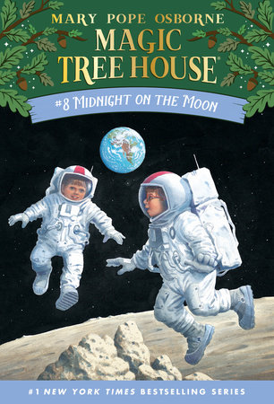
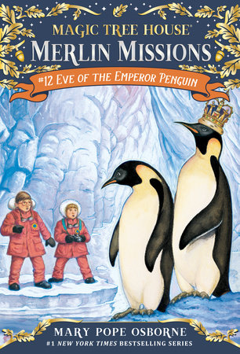
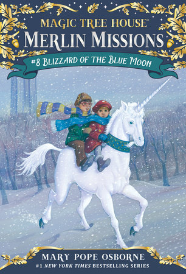
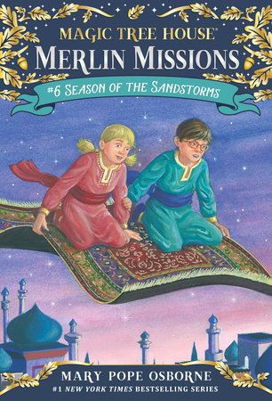
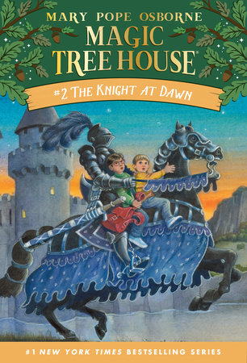

Three… two… one… BLAST OFF! The Magic Tree House whisks Jack and Annie off to the moon—and the future.
Their mission? To find the last "M" thing that will free Morgan from the spell. Can they do it before the
air in their oxygen tank runs out? Will the mysterious moon man help them? And why is Peanut the mouse
acting so strange? Jack and Annie are whisked forty years "forward in time and land at an international space
station on the moon. There they don space suits and go exploring the lunar surface in search of the fourth
object needed to free the enchantress Morgan le Fay from a powerful spell.
The story begins as Annie wakes her brother at midnight. She wants to go to the magic tree house. Jack insists
they won’t be able to find it in the dark, but Annie explains they can make their way by the light of the full
moon. They arrive at the tree house to find the last three items they have collected still on the floor. Annie
reminds Jack that they need to locate a fourth item to free Morgan from her spell. Peanut sits on top of a book
titled Hello Moon, which Annie opens. Although the book they touch usually indicates where they will travel, Jack
reminds Annie that there is no air on the moon, which makes it an impossible destination. They guess that they may
be traveling to a place where astronauts are trained. The minute Jack points to a picture in the book, winds begin
to blow, and the tree house starts to spin...

Jack and Annie arrive on the one continent they haven’t visited before: Antarctica! What can they hope to learn
about happiness in such a barren place? Only the penguins know for sure…Jack and Annie are about to find out!
In Book 40 of Mary Pope Osborne's Magic Tree House series, Jack and Annie receive their last charge in the
"Merlin Mission" sequence, to discover the final secret of happiness, a mission made more crucial by the serious
illness of Merlin himself. Again the two accept the challenge and their mysterious tree house drops them down
in Antarctica, near the research facility at McMurdo Station.
As always, in Magic Tree House #40: Eve of the Emperor Penguin, Osborne skillfully weaves adventure and
geographical information into a beginning chapter novel which will please her many readers. Sal Murdocca's
illustrations here are of especial value in picturing the esoteric setting in which the author has placed
her young heroes.

Jack and Annie must rescue a beautiful magical creature—the unicorn. But when they land in New York City during the
Depression of the 1930s, Jack and Annie are confused. Where will they find a unicorn in a big city?
As they look for the unicorn, Jack and Annie get lost in a snow storm. They ride in the subway, find help in
Belvedere Castle, and go to an art museum. During their adventure, two people follow them. Jack and Annie think the
people are their friends, but they aren’t. Instead, the mysterious people are trying to capture the unicorn.
While the kids are lost in New York, most of the suspense is created by the people following them. In the end,
Jack and Annie discover a dark wizard has sent these two people to capture the unicorn. Most of Blizzard of
the Blue Moon lacks action, and there are several unrealistic events. However, finding the unicorn adds magic
and whimsy to the story and produces a happy conclusion.

Jack and Annie travel back in time to a desert in the Middle East. There they meet a Bedouin tribe and learn about
the way that they live. From camel rides and oases to ancient writings and dangerous sandstorms, this is another
Magic Tree House filled with all the mystery, history, magic, and old-fashioned adventure that kids love
to read about.
Continuing their Merlin Missions, Jack and Annie travel back 1200 years in time to help the caliph (an Arabian ruler)
to spread 'wisdom to the world'. Season of the Sandstorms takes them on an adventure to the ancient city of Baghdad.
Armed with their magic rhyme book, Jack and Annie travel by camel in high desert temperatures through ferocious
sandstorms, with very cool nights after the sun has settled.
In the Facts section, Osborne writes of the ancient city that 'lies between the Tigris and Euphrates rivers',
once known as Mesopotamia, meaning between the rivers. Illustrator Sal Murdocca delivers splendid black and
whites sketches of proud camels, people dressed in long robes, pointed shoes, and head scarves, and a wondrous
starry sky over large city buildings.

A castle with a secret passage! That's what Jack and Annie find when the Magic Tree House whisks them back to the
Middle Ages for another wild adventure. In the Great Hall of the castle, a feast is under way. But Jack and Annie
aren't exactly welcome guests! Jack and Annie travel back in time to medieval England for an adventure inside a
storybook castle, from feasting hall to dreadful dungeon.
In the tree house, Annie finds a book about castles and turns to a page picturing a knight on a horse. Before
Jack can warn her, she puts a finger on the picture and wishes that they could meet a knight in shining armor.
The tree house starts to spin and lands in front of a castle. Jack wants to go home, but Annie climbs down the
ladder to explore. Jack finds information about knights in the book from the tree house and begins taking notes.
Before Jack can stop her, Annie goes to the castle to explore in it. He follows her, and they hear music inside.
Jack takes notes about the things he reads and observes, including the fact that feasts sometimes include peacocks
for dinner, crocodiles sometimes swim in a castle’s moat and a knight’s helmet can weigh up to 40 pounds...